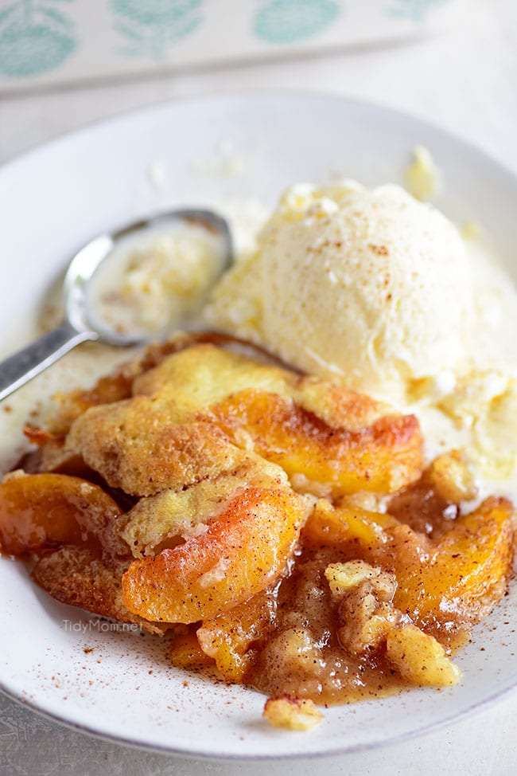

Peach Cobbler

Description
Quick, yummy, easy, and light peach cobbler
Ingredients
- ½ cup reduced-calorie margarine, melted
- 1½ cups all-purpose flour
- 2 teaspoons baking powder
- 1½ cups white sugar
- ½ cup skim milk
- 4 (15 ounce) cans sliced peaches packed in juice, drained and
juice reserved
Steps
- Preheat the oven to 375 degrees F (190 degrees C).
- Pour the melted margarine into the bottom of a 9x13 inch baking dish;
set aside. In a medium bowl, combine the flour, baking powder and
white sugar. Stir in 1 cup of the reserved liquid from the peaches
and the milk until smooth. Pour the batter evenly into the bottom of
the dish over the margarine. Do not stir. Spoon peaches over the
batter.
- Bake for 35 to 40 minutes in the preheated oven, or until the top
is golden.